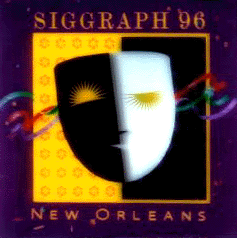

SIGGRAPH 96
New Orleans |
|
Dan Tanner on
Aug 4-9 1996 |
issue 05 |
Tanner talks about the highlights of SIGGRAPH 1996 New Orleans.
|
|
|
Summary
The 1996 SIGGRAPH Conference as held at the New Orleans Convention Center on the banks of the Mississippi River. It was hot and humid but the New Orleans ambiance and charm and the well appointed facilities made the event a pleasure to attend. Add to that the Cajun food, blues and Cajun music, and the world renown spectacle of Bourbon Street and you have week of not only SIGGRAPH education and inspiration, but also of exotic fun. Whether taking a short ride on a Mississippi riverboat ride, listening to Waylan Tibedeau's Cajun band, or visiting the voodoo shops in the French Quarter, or watching a Marti Gras video tape in a Bourbon Street bar, or sitting on the banks of the River at LeMoines Landing outdoor bar and restaurant, or walking through the Riverwalk, riverside shopping mall, New Orleans is a trip, and a trip worth making. The world's computer graphics community was there in force, and the entire event was well presented and attended (30,000 +). Next year SIGGRAPH is back in Los Angeles at the LA Convention Center, hopefully SJSU will be well represented there once again.
The Conference
WHAT WAS NEW?
I didn't see anything truly new and innovative from last year's SIGGRAPH, although technology and applications seemed to be progressing somewhat.Some of the sophistication of the products and demonstrations had elevated in style or impact, or at least the presentation had become slicker -- butwhere was the new breakthrough stuff? Maybe next year. There were some very interesting things at SIGGRAPH 96, however, and as always it was a pleasure to be there.
VIRTUAL REALITY
Virtual Reality technologies are continually developing, moving forward and expanding to include new immersion technologies that are free
from the constrictions of hardwired, heavy and cumbersome head-mount displays. The vision dome is a small free-standing structure with a 3D sound system and rear projection video capable of allowing 10-12 people to simultaneously experience a 360-degree immersive virtual reality. The developer of the dome said he was working on a desktop single user version. Personal dome? or VR lampshade on your head....?
MOTION CAPTURE AND REAL TIME CONTROL
There are several technologies being brought into production that are very precise and included impeccable real time control of animation. Dancers lightly wired could control cartoon figures projected behind them with no perceivable delay and the actors could also speak dialogue into microphones and have the animations appear to be the speakers with animated facial gesticulation. As the price for these kinds of technologies continues to be reduced and the ease of use and software package interfaces become more developed, new art forms will undoubtedly develop.
THE BRIDGE
The Bridge was the name to designate a network connected art gallery which extended between a gallery room at the convention center and the very well appointed Contemporary Arts Center Gallery in downtown New Orleans.
The exhibitions shown included electronic network connected voodoo alters, and network connected toilet stalls which featured electronic white boards for sharing bathroom graffiti and interstall communication. There were many other interesting and innovative works of art. One of the most intriguingand beautiful was Beyond Pages, a remarkable work that coupled computer control of a book paradigm with an interactive virtual reality experience of using a book to trigger a computer-controlled audio and video displayed in various forms, both in the book and around the room. Truly beautiful and amazing.
ELECTRONIC THEATER

This year's Electronic Theater computer animation festival was remarkable for the content, and though it still retained a distinct Hollywood flavor, displayed some independent and innovative work. The major showing was in the New Orleans historic Sanger Theater which was a spectacle in itself. How did they make clouds continually pass over the horizon of the ceiling and look so real? The pieces were a step up in production value and reflected the immense creativity of the SIGGRAPH community.
WANGO
Wango was SJSU's entry into the conference's user contributed display area, called the Digital Bayou. CADRE students created an exploration of user interaction with the subject of signs and symbols. The piece utilized Silicon Graphics hardware and Alais software to allow the users to follow a thread of meaning by clicking a mouse on different areas of an image. The project demonstrated the innovation and competence of SJSU's CADRE program.
|
| |
|
 |
|
 |
|

|
::CrossReference last 5 articles posted by Tanner :: From Visicalc to Cybernetic Babylon - Jan 20 2000 :: SIGGRAPH 96 - Aug 9 1996
|